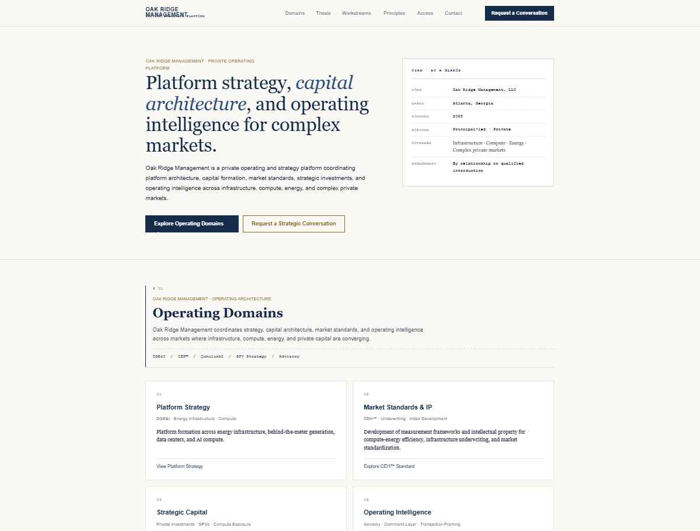
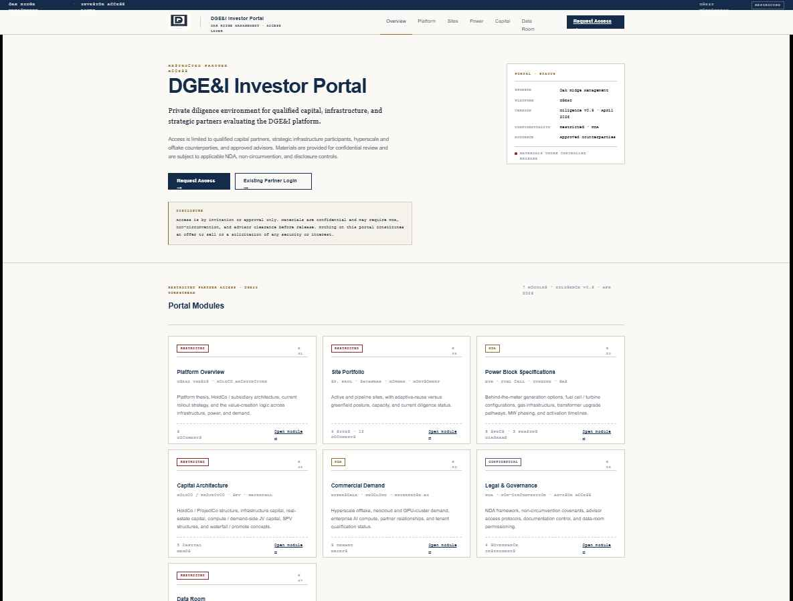
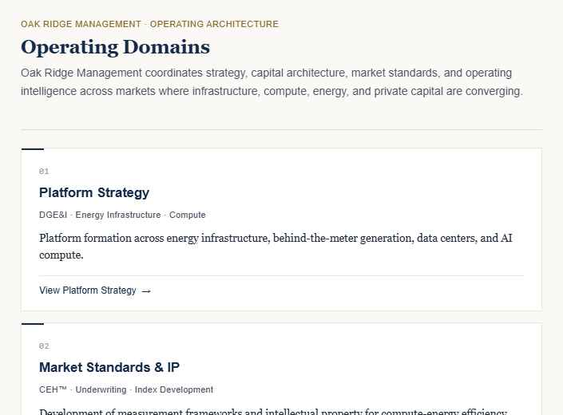
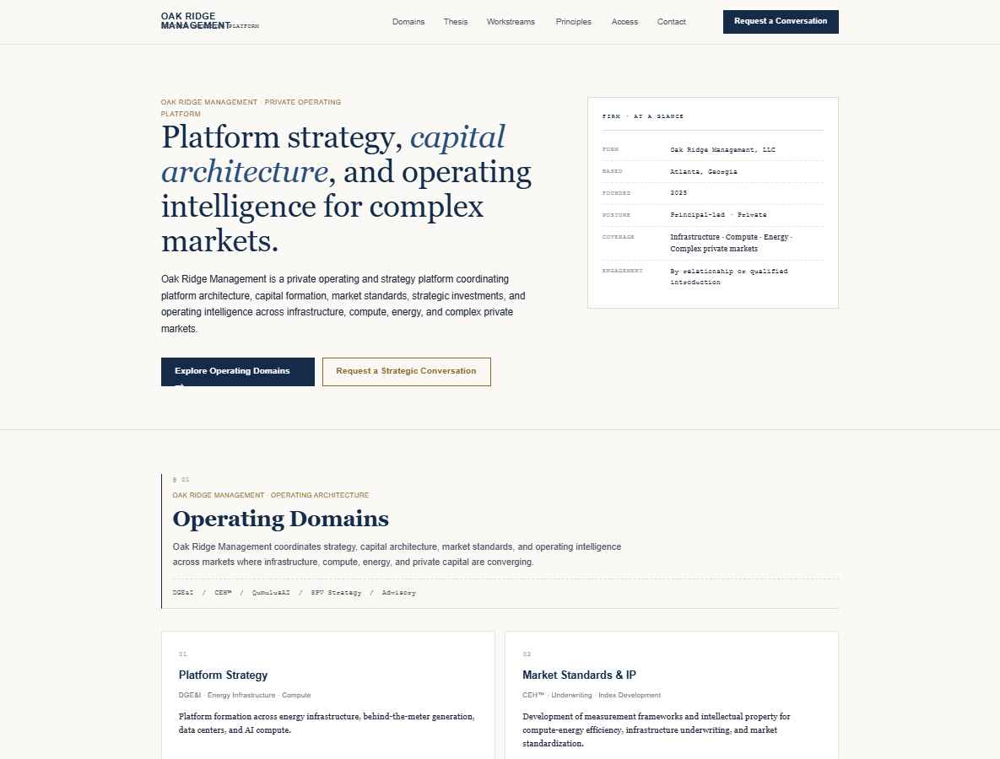
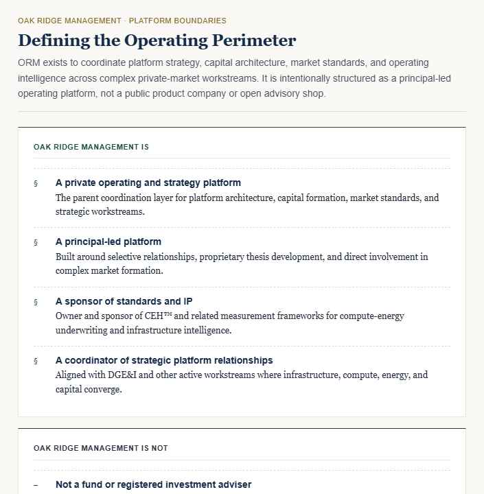
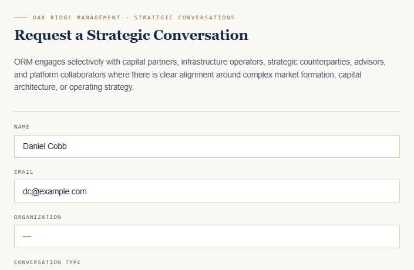
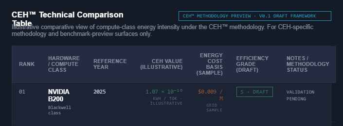
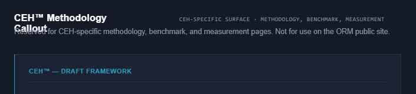
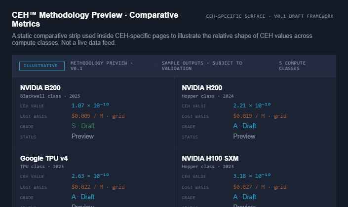
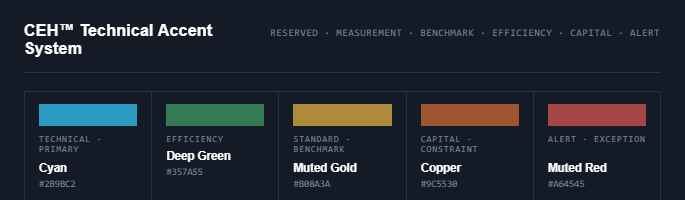

A page-level inventory of the design system for one consolidated revision pass. Each section shows the current rendered state, the files/components that produce it, its brand-hierarchy tag, and any remaining caveats.
The parent ORM site. Institutional warm-stone, navy authority, bronze accents used sparingly, forest as support, charcoal/slate for structure. Sentence-case editorial serif headings on a stone canvas.

ORM access-layer ribbon, DGE&I masthead, hero with disclosure box and memo stamp, seven document-card modules, site portfolio table, Power Block comparison, capital-architecture diagram, data-room index.

2×2 institutional grid. Approved direction; single-accent navy stub, sentence-case h3, editorial serif desc.

Institutional table — workstream · domain · stage · focus · surface. Stage badges use forest / bronze / navy / slate / charcoal.

Two-column boundary statement. Forest accent on "Is," charcoal on "Is Not." Closing disclosure paragraph.

Qualified intake form (preview) and four-category conversation grid (homepage section). "Submit Inquiry →" CTA, restricted-access disclosure box.

Subordinate to ORM. Deep-slate surface, muted cyan / deep green / muted gold / copper / muted red accents — only on CEH-specific pages. All values labelled "illustrative" and "subject to methodology validation."




assets/css/shared.css) or move it into a ui_kits/ceh-technical/ subfolder as the source for the eventual CEH page.
Tab access. The Design System tab in this project shows every registered preview card and both UI kits — open it for the live, click-thru versions. This file is a static review snapshot for the consolidated revision pass.